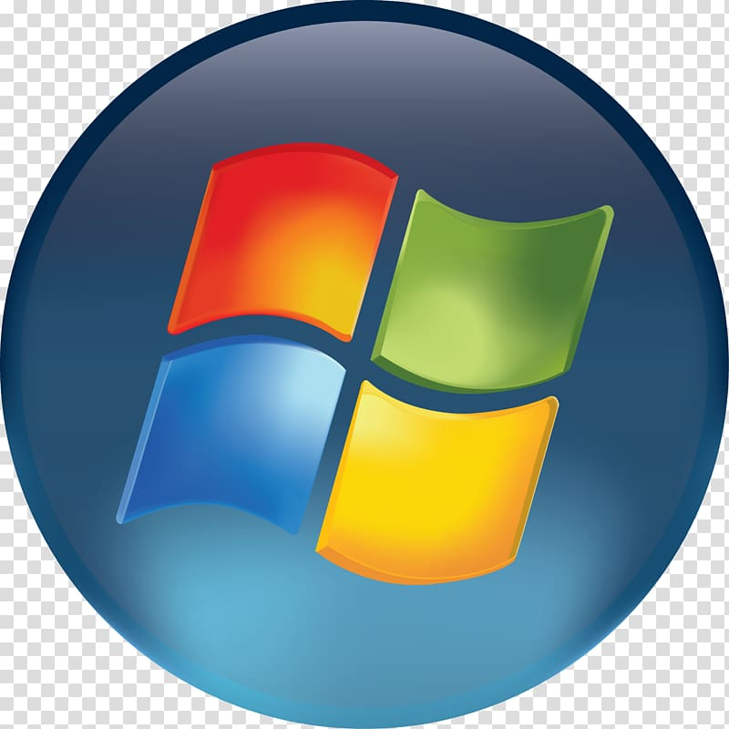
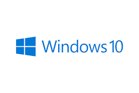

Sistem Operasi Windows
- Windows XP
- Windows Vista 
- Windows 10 
Klik gambar di bawah ini untuk menuju situs resmi Microsoft

Sistem Operasi Linux
- Debian OS
- Ubuntu OS
- Redhat OS


Klik gambar di bawah ini untuk menuju situs resmi Linux

Sistem Operasi Mac
- Mac OS
Klik gambar di bawah ini untuk menuju situs resmi Apple